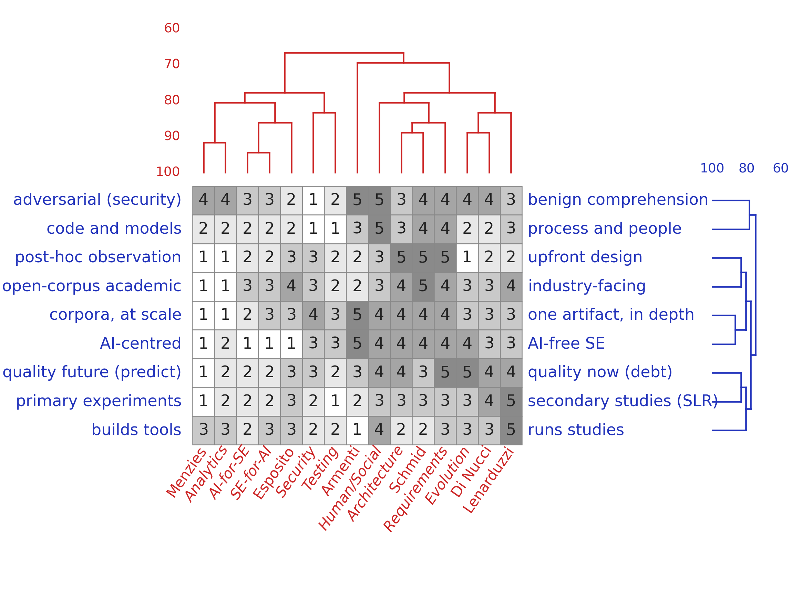

Where could this team work, and what important issues live there?
The move. Take a working list of “where” from the venue itself — e.g. the nine areas of the ICSE'27 research-track call. Score each area on the same constructs as the people and add them to the grid as reference columns: archetypes of how that area's typical highly-cited researcher would rate. The cluster tree then answers what a topic list cannot: who stands nearest which area.

Same grid as trick 1; the italic columns (Analytics, AI-for-SE, Security, Testing, …) are the venue's areas scored as archetypes. The red tree shows who stands nearest which area.
What it showed here. Strong pairings (Menzies 92% to analytics, Di Nucci 89% to evolution, Schmid 89% to requirements and architecture). The far columns matter as much: no author within 85% of security or testing — a priced blind spot. Papers there get written against the grain, or with a new collaborator who brings that column closer. And the tree showed the team splits in two wings: one measures, one crafts — a division of labor, one wing per half of any paper that both observes a corpus and builds a thing.
Nominate a shared topic — three calculations, same matrix:
The knob. Disagree with an archetype column? Edit the area
columns in focus.py (or swap in another venue's list),
run make focus; centroid, maximin, and blend scores
follow.
Combines with: 1 — know thyself supplies the grid; 3 — read above the knee takes the nominated topic as its goal line.